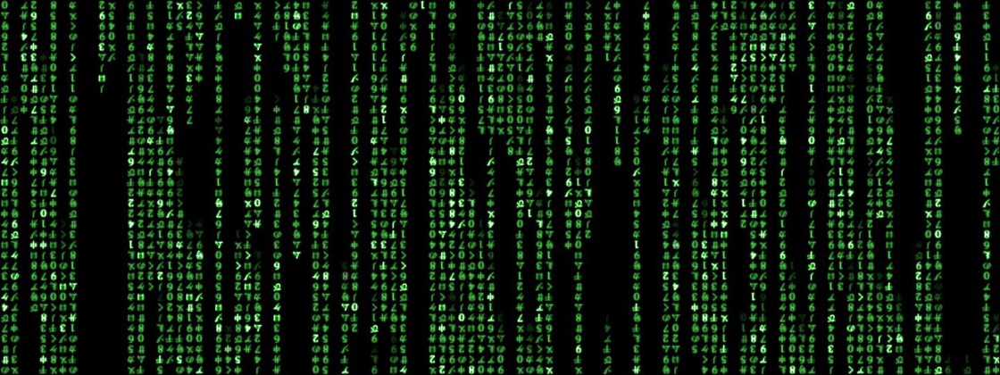
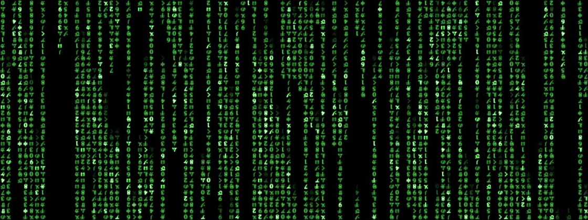

André Felipe Barroso estudante de desenvolvimento
de sistemas na Trybe.
Brasileiro, 31 anos , solteiro
Endereço: Rua Guaranésia, Colégio Batista, Belo Horizonte
Apaixonado por tecnologia, iniciei minha vida profissional cursando Engenharia de Controle e Automação
pela PUC-Rio. Por ser uma graduação
interdiciplinar, tive a oportunidade de conhecer a área de desenvolvimento e já naquela época
descobri afinidade e gosto pela área. Após formado em
2016, trabalhei em diferentes áreas mas sempre com o sentimento que minha realização profissionalseria
sim trabalhar na área de desenvolvimento.
Com muita felicidade, inicio agora a minha trajetória de transição de carreia para num futuro próximo finalmente me tornar um desenvolvedor.
- Especificações técnica para projetos na área de automação de dosagem industrial.
- Manutenção/programação de softwares de automação de processos dosagem industrial.
- Calibração/manutenção de dosadores industriais.
- Supervisão
- Experiência com clp Micro800, IHM PanelView 800 e inversores PowerFlex Rockwell.
- Experiência com dosadores industriais Coperion / Ktron.
- Experiência com dosadores industriais Hasler.
- Operacionalização e administração de plataforma de ensino á distância.
- Prospecção de clientes, vendas, relacionamento e marcação de visitas para serviços nas áreas de engenharia elétrica, mecânica e industrial.
- Alimentação de dados das negociações e dos clientes em CRM.
- Serviços administrativos.